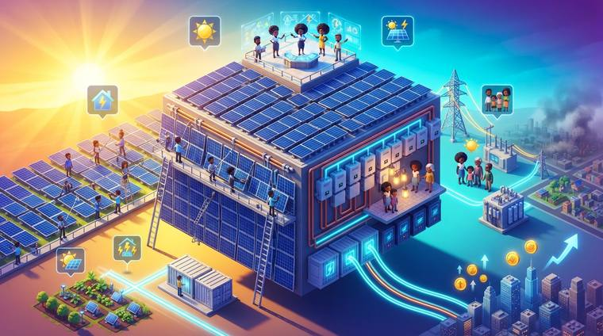

O que é
São placas solares instaladas num terreno ou num telhado grande.
A energia gerada abate a conta de luz das casas e dos projetos que participam.
O que sobra é injetado na rede e vira crédito ou dinheiro.
Que dano ele ajuda a reparar
Conta de luz pesada e famílias descapitalizadas. A usina baixa uma despesa fixa de todo mundo.
O que costuma precisar
- Terreno ou telhado com sol o dia todo e documentação em ordem
- Placas, inversores e estrutura de fixação
- Projeto elétrico e aprovação da distribuidora
- Empresa habilitada para instalar
- Limpeza e manutenção periódica das placas
Os valores de cada item entram no programa, com pesquisa de preço quando há internet.
E depois que o dinheiro acabar?
A economia na conta de luz e a venda do excedente sustentam a usina. É um dos modelos com o dia seguinte mais previsível.
O acordo não permite pagar conta de consumo individual de família. Aqui a energia é da estrutura coletiva — o programa checa esse limite linha por linha.
Este modelo é um ponto de partida, não uma receita fechada. A comunidade muda o que quiser, e o programa refaz as contas junto.
Quer começar por este modelo?
Baixe a Sementeira, escreva a sua ideia e escolha este modelo. O resto o programa preenche com você.
Outros modelos